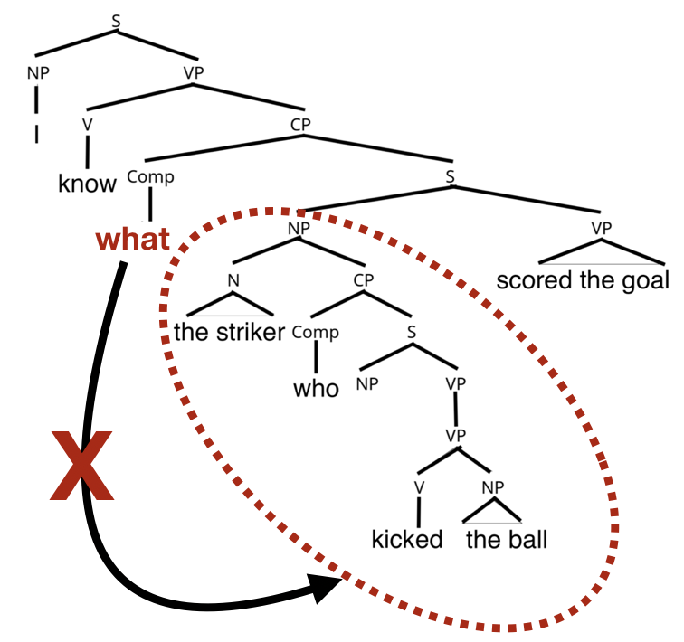
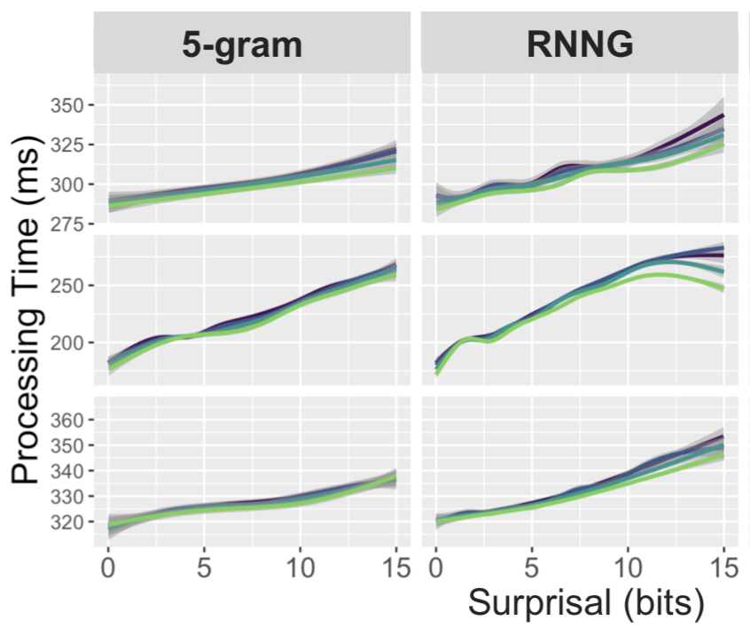

Computational Models of Hard-To-Learn Syntactic Phenomena

How do humans learn syntactic structures? Is the computational mechanism bounded by innate constraints, perhaps even language-specific ones? To what extent must one be engaged in communication, as opposed to say just pattern recognition, in order to learn syntax? This work seeks to understand what syntactic structures can be learned by domain-general learning algorithms trained to predict the next word given a context. The primary focus of the work is on models' ability to learn filler--gap dependencies and the related constraints on them, including island constraints. The papers listed below follow a sequential order, so start from the top and read down if you're interested.
Publications
[•] Wilcox, Ethan; Levy, Roger; Morita, Takashi; Futrell, Richard. 2018. What do RNN Language Models Learn about the Filler-Gap Dependency? Proceedings of Blackbox NLP at EMNLP 2018
[•] Ethan Wilcox, Peng Qian, Richard Futrell, Miguel Ballesteros, Roger Levy. 2019. Structural Supervision Improves Learning for Non-Local Dependencies. NAACL-HLT 2019
[•] Ethan Wilcox Roger Levy and Richard Futrell. 2019. What Syntactic Structures block Dependencies in RNN Language Models? Proceedings of CogSci 2019.
[•] Ethan Wilcox, Roger Levy and Richard Futrell. 2019. Hierarchical Representation in Neural Language Models: Suppression and Recovery of Expectations. Proceedings of Blackbox NLP at ACL 2019 Forthcoming
Neural Networks as Models of Human Language Processing

Neural networks are everywhere, and have achieved state of the art performance on many NLP tasks. But to what extent do they serve as good models for human linguistic processing? This work seeks to benchmark neural network models by treating them like subjects in a psycholinguistic experiment. By deriving word-by-word predictions, and comparing these to classic studies of human word-by-word reading times, we can uncover the ways in which models' learned representations are driving behavior that is similar to (and different from) human behavior.
Publications/Presentations
[•] Ethan Wilcox, Jon Gauthier, Peng Qian, Jennifer Hu and Roger Levy. 2020. Evaluating the Effect of Model Inductive Bias and Training Data in Predicting Human Reading Times. CUNY Conference on Sentence Processing. (Poster)
[•] Aixiu An, Peng Qian, Ethan Wilcox, and Roger Levy. 2019. Representation of Constituents in Neural Language Models: Coordination Phrase as a Case Study. EMNLP 2019
[•] Richard Futrell, Ethan Wilcox, Takashi Morita, Miguel Ballesteros, Roger Levy. 2019. Neural Language Models as Psycholinguistic Subjects: Representation of Syntactic State. NAACL-HLT 2019
[•] Futrell, Richard; Wilcox, Ethan; Morita, Takashi; Levy, Roger. 2018. RNNs as Psycholinguistic Subjects: Grammatical State and Syntactic Dependency
Recursive Models of Pragmatics
The interpretation of linguistics utterances in context depends on the prior beliefs of speakers and hearers. At the same time listeners often make pragmatic inferences. When these two things --- prior beliefs and pragmatic inferences -- are pitted against each other, what happens? In this work we test human subjects on exhaustivity effects and seek to model their responses using a recursive, Bayesian model of pragmatics (the Rational Speech Act model).
Publications
[•] Ethan Wilcox and Benjamin Spector. 2019. The Role of Prior Beliefs in The Rational Speech Act Model of Pragmatics: Exhaustivity as a Case Study. Proceedings of CogSci 2019
Models of Language Change and Language Loss
 The past 100 years have produced massive changes in the way humans live, travel, produce goods and organize societies. The next 100 years will see even more change, from the increasing urbanization of the planet, to the continued processes of decolonization and industrialization, to the impact of climate change. The effects these ongoing changes have on the world's linguistic diversity are poorly understood. I am using global census data from the late 20th century to understand what factors have lead to language change in the past, with the hope of building interpretable predictive models.
The past 100 years have produced massive changes in the way humans live, travel, produce goods and organize societies. The next 100 years will see even more change, from the increasing urbanization of the planet, to the continued processes of decolonization and industrialization, to the impact of climate change. The effects these ongoing changes have on the world's linguistic diversity are poorly understood. I am using global census data from the late 20th century to understand what factors have lead to language change in the past, with the hope of building interpretable predictive models.
Presentations
[•] Ethan Wilcox. 2019. Using Global Hotspots to assess the Effects of Climate Change on Linguistic Diversity. Computational Psycholinguistics Lab Meeting, MIT.